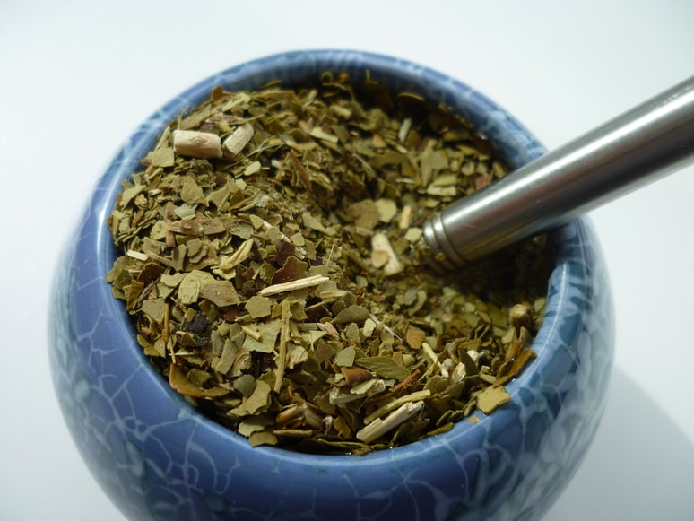

Yerba Mate

Yerba to naturalny napar przyrządzany z liści ostrokrzewu paragwajskiego (ilex paraguariensis, St.Hillaire). Napój ten ma niezwykłe właściwości pobudzające, wzmacniające, oczyszczające i regulujące. Skład Yerba Mate jest bogaty w składniki odżywcze, dzięki czemu spektrum jej dobroczynnego działania na organizm jest fantastycznie szerokie. Ale po kolei.
rycina rośliny Yerba Mate
Ostrokrzew paragwajski, z którego liści i patyczków powstaje yerbowy susz, jest to wiecznie zielone drzewo, osiągające w stanie dzikim nawet do 20-30 m wysokości Występuje jedynie na niewielkim obszarze pomiędzy Oceanem Atlantyckim, a rzeką Paraguay i - ciekawostka - nie udaje się go uprawiać w żadnym innym miejscu na świecie.
Konkretnie, yerbę uprawia się w kilku krajach: Argentyna, Paragwaj i Brazylia. I jest to bardzo ważna informacja, ponieważ z krajem pochodzenia wiąże się najważniejszy podział na rodzaje Yerba Mate. Picie mate jest powszechne w Paragwaju, Urugwaju, Argentynie, południowej Brazyli i Chile i wśród ludzi w każdym wieku i często jest wspólnym rytuałem.